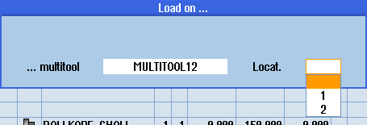

Precondition
A multitool has been created in the tool list.
Procedure
 | 1. | The tool list is opened. |
Equipping the multitool with a new tool |
 | 2. | Select the required multitool, position the cursor on an empty multitool location. |
 | 3. | Press the "New tool" softkey. |
| | 4. | Using the appropriate selection list, e.g. favorites, select the required tool. |
Loading the multitool |
| | 2. | Select the required multitool, position the cursor on an empty multitool location. |
 | 3. | Press the "Load" softkey. The "Load with..." window opens. |
 | 4. | Select the required tool. |
Loading the tool into the multitool |
| | 2. | Position the cursor on the tool that you want to load into the multitool. |
| | 3. | Press the "Load" and "Multitool" softkeys. The "Load on ..." window opens. |
| | |  |
| | 4. | Select the required multitool and the multitool location to which you wish to load the tool. |